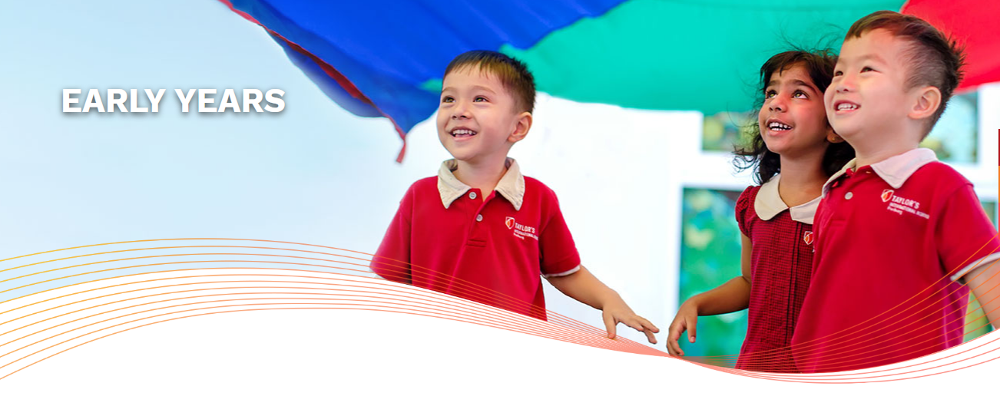

We offer the International Early Years Curriculum (IEYC). This is the precursor to the International Primary Curriculum (IPC), which is offered in our primary school and therefore ensures continuum of learning.
The IEYC is based on the latest international research about the best practices in the field of Early Years Education. Led by trained teachers in Early Childhood education, we also introduce young learners to English, Bahasa Malaysia, and Mandarin through fun, motivating activities.
The IEYC has a set of four Learning Strands. Each IEYC unit of learning is carefully designed around a central theme, holistically linking all four Learning Strands to relevant and engaging activities that can be adapted to meet each child’s learning needs. The Learning Strands describe what children will experience and learn through the IEYC units of learning.